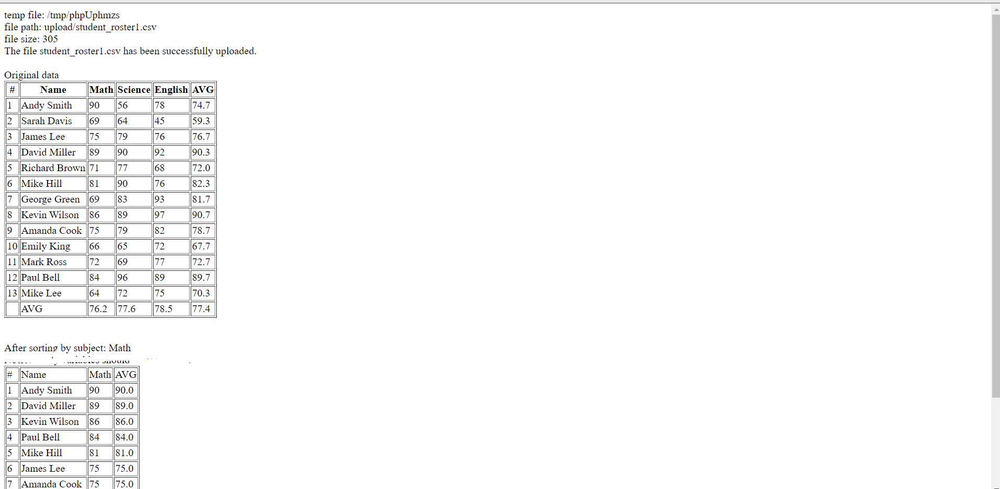

It displays the file path
It displays the file size. If the file size is smaller than 10 bytes or bigger than 1000 byes, an error message “File size is not within the range, upload failed!” will be given.
If the file is not a CSV text format, it displays an error message “File is in wrong format. Only text format is allowed”
If the file is in CSV text format and number of column is NOT 4, it displays an error message “The text has wrong number of columns, upload failed!”
If there is no error, the file should be uploaded successfully and program should display a message “The file **** has been successfully uploaded.”
If there is no error, it displays the original roster included the header, all the columns and rows, average of each subject, average of each student in HTML TABLE format
If there is no error, it displays the sorted output in HTML TABLE format on the browser, The output should include student name, and the selected subject(s) only, average of each subject, and average of each student on the selected subjects. The output should be sorted by the Avg from high to low and the averages should have only ONE decimal. Sorting is done by php program